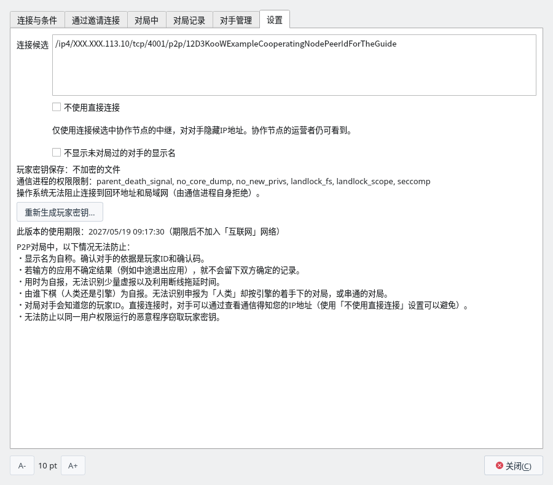
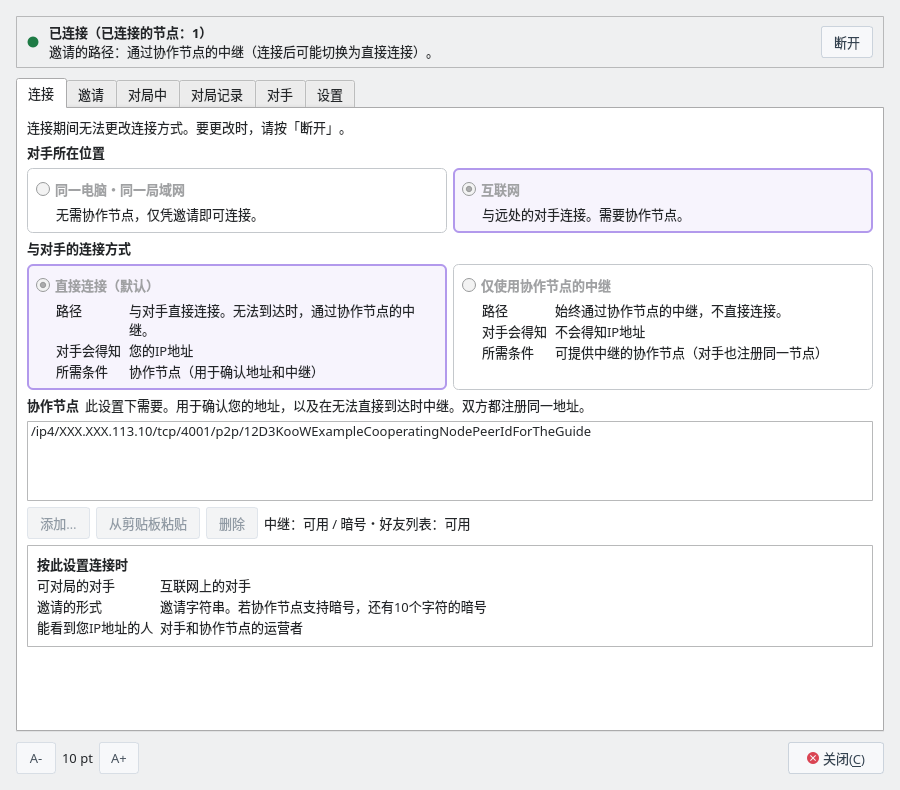
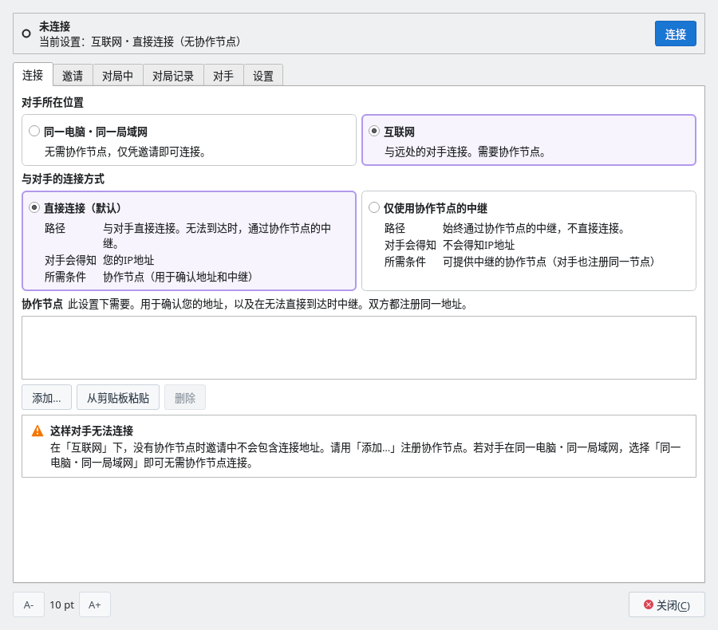
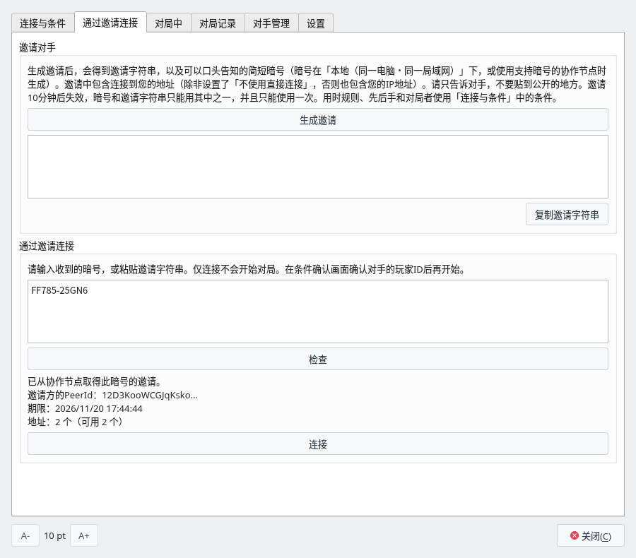
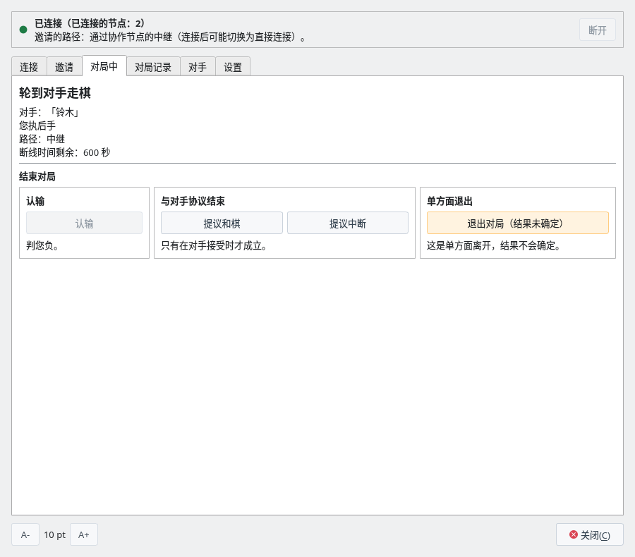
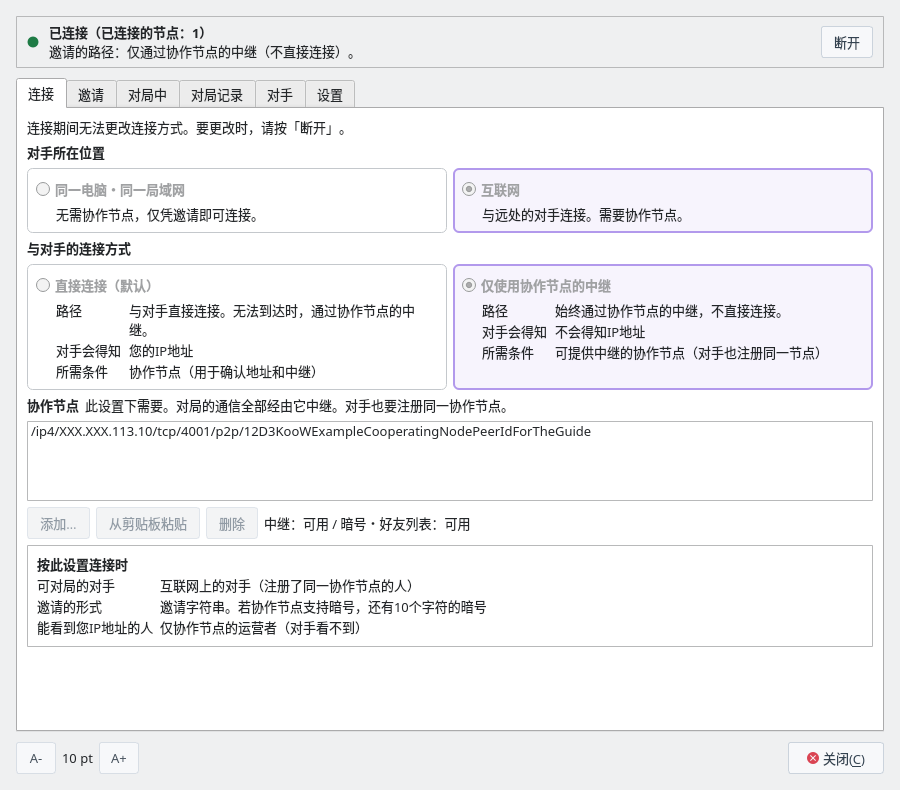
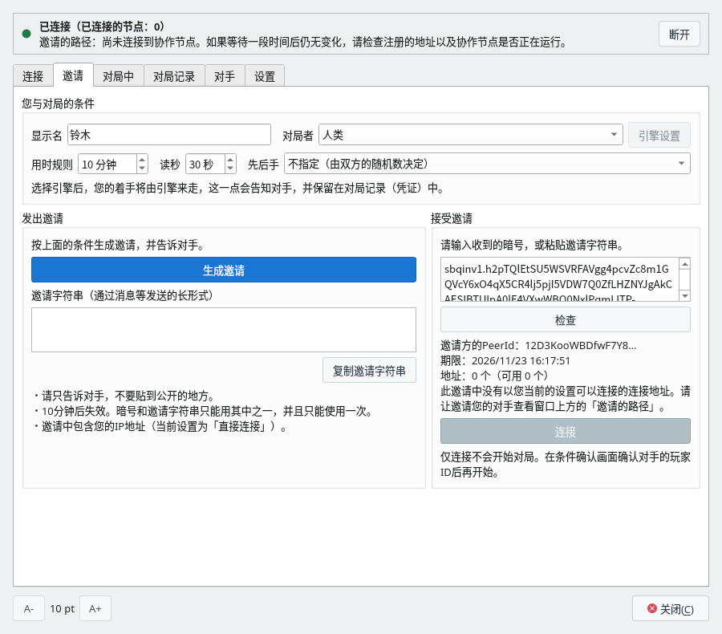
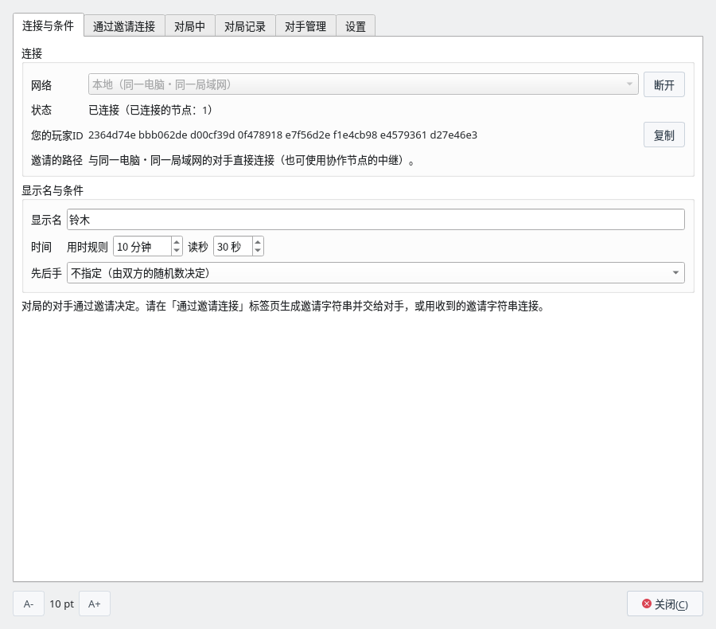

什么是协作节点
在通过互联网的对局中，双方的应用最先连接的服务器
要通过互联网对局，必须在邀请字符串中放入对手的应用连接到您的电脑所用的地址。但是，家庭网络和手机网络的电脑大多在路由器内侧，电脑本身并不知道自己在互联网上以哪个地址被看到。来自外部的连接也可能被路由器拦下。P2P对局也没有寻找对手或互相告知地址的服务器。
因此，应用会先连接运行在互联网可以到达之处的“协作节点”，请它负责下面两件事。
- 可达性确认：请协作节点确认从互联网看到的这台电脑的地址，以及能否从外部到达该地址。如果能到达，就把这个地址放入邀请字符串，与对手直接连接。
- 中继：在协作节点上预约中继的席位，并把经由协作节点的地址也放入邀请字符串。无法从外部直接到达时（家庭网络大多如此），对手用这个地址经由协作节点连接。
不填协作节点就以“互联网”连接时，邀请字符串中一个地址也没有，对手无法连接。
- 做的事：可达性确认和中继。加上
--meet启动的协作节点，还负责暗号的会合（最多存放加密的邀请 10 分钟）。 - 不做的事：不判定着手和胜负，也不保存对局记录。中继的通信在双方的应用之间加密，因此它也读不到内容（着手、玩家ID、显示名）。为暗号的会合存放的邀请，也用由暗号生成的密钥加密，因此同样读不到。
- 与对局服务器的区别：即使经过中继，对局的另一方仍是对手的应用，协作节点不起CSA网络对局的服务器那样的作用。对照表请见经过中继时，协作节点也不是对局服务器。
- 运营者能看到的：使用者的 IP 地址，以及哪些 IP 地址之间建立了连接。协作节点的程序不会把来源 IP 地址写入日志，但运营者检查通信就能知道。确认可达性时，只请协作节点逐个确认它看到的地址，不发送使用者在局域网内的地址。
- 中断或延迟通信：协作节点可以中断或延迟它中继的通信，但无法改写内容（改写过的通信会在加密的检查中被发现，应用不会接受）。通信中断时，与线路断开时一样处理（线路断开时）。
由谁启动协作节点
一个协作节点就够了。由能准备互联网可达服务器的人启动，并把地址告诉对局的人
- 一个就够：对局的两人合起来只需要一个协作节点，不需要各自启动。
- 两人填入相同的地址：启动的人告知地址，两人都把它填入“设置”标签页的“连接候选”。邀请方没有填入时，邀请字符串中没有连接地址。使用“不使用直接连接”的人，必须与对手填入相同的协作节点。
- 多组共用：一个协作节点可以供许多组对局者使用（中继席位同时最多 128 人）。
- 应用中没有内置：应用中没有协作节点的地址，需要由对局的人自己准备。
协作节点由能准备互联网可达服务器的人启动。可以是对局两人中的一方，也可以是两人都认识的人。
| 启动的人 | 适合的情况 |
|---|---|
| 对局两人中的一方 | 拥有 VPS 等服务器，或能在家里的路由器上开放端口时 |
| 熟人（不参加对局的人） | 在研究会或社团中，由一人运行协作节点，全体成员共用其地址时 |
启动的人需要下面这些条件。
- 互联网可以到达的 IP 地址：拥有公网 IP 地址的服务器（VPS 等），或可以开放端口的家庭网络。手机网络，以及运营商叠加多层地址转换的网络（CGNAT）无法从外部到达，因此无法运行。
- Linux 或 macOS：协作节点的程序会先限制自己的权限再运行（Linux 使用 Landlock 和 seccomp，macOS 使用沙盒）。在无法施加这些限制的环境中无法运行，也不能在 Windows 上运行。本页的步骤以 Linux 服务器为例。
- 一个可以开放的 TCP 端口：本页的示例为 4001 号。
- 持续运行：两人对局期间请不要停止。通过中继下棋的对局会在协作节点停止时断开，如果 120 秒内无法重新连接，就会中断（结果未确定）。
运营者能看到使用者的 IP 地址。请事先告知使用者。
在准备服务器之前，也可以先在同一局域网内试用协作节点的启动和中继（在局域网内试用）。
启动协作节点
把P2P对局的通信进程 shogiboardq-peer 作为协作节点运行
协作节点就是加上 --service 启动的P2P对局通信进程 shogiboardq-peer。启用P2P对局构建应用后，它会生成在与应用相同的文件夹中（安装后放在 bin 中）。
服务器上既不需要 Qt 也不需要显示器。只要有 Rust（1.85 以上）和 C 编译器，就可以只构建通信进程。
$ git clone https://github.com/hnakada123/ShogiBoardQ.git
$ cd ShogiBoardQ
$ cargo build --release --locked -p shogiboardq-peer
$ sudo install -m 755 target/release/shogiboardq-peer /usr/local/bin/$ shogiboardq-peer --service --relay --meet --network sbq-limited-1 \
--identity ~/coop-node.key --listen /ip4/0.0.0.0/tcp/4001
shogiboardq-peer: service started as 12D3KooW…| 选项 | 含义 |
|---|---|
--service | 作为协作节点运行。 |
--relay | 负责中继。家庭网络之间的对局几乎都需要。 |
--meet | 负责暗号的会合。加上后，“互联网”的邀请也会得到可以口头告知的 10 个字符的暗号。协作节点只是最多存放加密的邀请 10 分钟，无法读取其内容。 |
--network sbq-limited-1 | 用于通过互联网对局的网络。应用的“互联网”会加入这个名称的网络。配合应用的“本地”使用的协作节点，要用 sbq-local-1 启动（在局域网内试用）。 |
--identity <文件> | 协作节点的身份密钥文件。不存在时会生成（只有所有者可以读写的权限）。只要一直使用同一个文件，PeerId 就不会变。删除后 PeerId 会变，需要重新告知地址。 |
--listen <地址> | 监听的地址和端口。0.0.0.0 表示在所有网络接口上监听。端口不一定是 4001。 |
启动后，service started as 后面会显示 PeerId。要停止时按 Ctrl+C。启动之后，每当数量变化时，输出已连接的应用数量（peers=），加上 --relay 启动时还会输出正在中继的连接数量（relays=）（例如 shogiboardq-peer: peers=2 relays=1）。加上 --meet 启动时，后面还会输出存放中的邀请数量（meets=）（本页的示例中省略）。relays 不是人数，每一对经由中继连接的两人计为 1。不输出连接来源的 IP 地址。
协作节点没有使用期限（期限只在应用加入“互联网”时起作用）。
在服务器的防火墙中，允许到 --listen 中所写端口（TCP 4001 号）的连接。使用 VPS 时，还要在服务商管理界面的数据包过滤（安全组等）中允许。
# firewalld
$ sudo firewall-cmd --permanent --add-port=4001/tcp
$ sudo firewall-cmd --reload
# ufw
$ sudo ufw allow 4001/tcp在家里的电脑上运行时，要在路由器上把该端口转发到这台电脑（端口转发）。家里的公网 IP 地址变化后，协作节点的地址也会变。另外，要从同一个家里的电脑使用这个协作节点，路由器必须支持回到自己公网 IP 地址的连接（NAT 回环），因为“互联网”不会连接局域网内地址的协作节点。
协作节点的地址是下面的形式。PeerId 是启动时 service started as 后面显示的字符串。
/ip4/<服务器的公网IP地址>/tcp/4001/p2p/<PeerId>请用 IP 地址书写（不能使用域名）。把这个地址告诉对局的人。
“互联网”只能使用互联网上的 IP 地址（公网 IP 地址）。即使填入 192.168.…、10.…、172.16.…～172.31.… 这样的局域网内地址或 127.0.0.1，该行也不会被使用（画面上不会有提示）。用局域网内的地址试用的方法请参阅在局域网内试用。
可以在应用中确认它是否在运行。把地址填入“连接候选”并以“互联网”连接，如果节点数变为 1 以上，并且“邀请的路径”中显示“通过协作节点的中继（…）。”或“直接连接（也可使用协作节点的中继）。”，就说明协作节点和中继可以使用。
要在服务器上持续运行，可以做成 systemd 服务，服务器重启后也会自动启动。用下面的内容创建 /etc/systemd/system/sbq-coop-node.service（身份密钥放在 /var/lib/sbq-coop-node）。
[Unit]
Description=ShogiBoardQ P2P cooperating node
After=network-online.target
Wants=network-online.target
[Service]
DynamicUser=yes
StateDirectory=sbq-coop-node
ExecStart=/usr/local/bin/shogiboardq-peer --service --relay --meet --network sbq-limited-1 \
--identity /var/lib/sbq-coop-node/coop-node.key --listen /ip4/0.0.0.0/tcp/4001
Restart=on-failure
[Install]
WantedBy=multi-user.target$ sudo systemctl enable --now sbq-coop-node
$ journalctl -u sbq-coop-node # 确认 PeerId对局双方的准备
双方都填入相同的协作节点，并以“互联网”连接
第一次使用时，生成玩家密钥并填入显示名（准备）。
在“设置”标签页的“连接候选”中，每行填入一个对方告知的协作节点地址（最多 16 个）。填入多个时，即使其中一个停止，也能使用其他协作节点。“连接候选”从下次连接时起生效（连接中更改时，请断开后重新连接）。


“设置”标签页：在“连接候选”中填入协作节点后（地址的一部分已隐藏）
在“连接与条件”标签页中把“网络”设为“互联网”，点击“连接”。连接到协作节点并预约到中继后，“邀请的路径”中会显示“通过协作节点的中继（连接后可能切换为直接连接）。”。预约可能需要一点时间。


连接到协作节点后
不填协作节点就连接时，不会连接到任何地方（“已连接（已连接的节点：0）”），“邀请的路径”中显示“尚无可从外部到达的连接地址。…”。在这种状态下生成的邀请字符串中没有连接地址，“生成邀请”下方会显示“此邀请字符串中没有连接地址，对手无法连接。…”。“连接候选”中只填了局域网内的地址时，也是同样的状态（在局域网内试用）。


不填协作节点就连接后
邀请并对局
交换邀请字符串的方式与不使用协作节点的对局相同
邀请方在“通过邀请连接”标签页中点击“生成邀请”，就会生成邀请字符串。如果协作节点是加上 --meet 启动的，还会以大号字显示 10 个字符的暗号（J6HB7-H6NWR 的形式）。暗号可以口头或通过电话告知，邀请字符串则通过消息等只能送达对方的方式交给对方。对方输入暗号或粘贴邀请字符串后，点击“检查”。“地址：N 个（可用 N 个）”中可用的地址有 1 个以上，就可以用“连接”连接。可用的地址为 0 个时，无法点击“连接”（无法连接时）。之后的条件确认画面和对局，与不使用协作节点的对局相同。
这种暗号中不包含连接地址。邀请经过加密后在协作节点上最多存放 10 分钟，由对方的应用用暗号取回（协作节点无法读取其内容）。它与同一局域网的“本地”暗号（12 个字符左右）形式不同，应用会自动区分。暗号和邀请字符串是同一个邀请，只能用其中之一，并且只能使用一次。
邀请字符串中放入经由协作节点的地址（如果邀请方的电脑可以从外部直接到达，还会放入那台电脑的 IP 地址）。请不要贴在公开的地方。
“地址：N 个（可用 N 个）”中，前一个数字是邀请字符串中包含的连接地址的数量（最多 8 个），“可用”是其中按您应用的设置可以连接的数量。两个数字都会随邀请方电脑和协作节点的地址数量而变化。
一个邀请字符串只能让一个人连接一次，10 分钟后失效。同时有效的最多 4 个，一次只能下一局（详见可以邀请的人数与次数）。


被邀请方：检查收到的暗号后
对手首先经由协作节点的中继连接。连接后，双方的应用会立即尝试穿过各自的路由器直接连接（打洞）。在 3 秒内直接连接成功时，会关闭经由中继的连接，条件确认和对局都通过直接连接进行（“对局中”标签页的“路径”为“直接”）。没有成功时，就继续使用经由中继的连接（“路径”为“中继”）。在确认能否直接连接期间，被邀请方的画面一直显示“正在连接…”。
“路径”变为“直接”时也需要协作节点。可以从外部直接到达的电脑，用它来确认放入邀请字符串的地址；其他电脑用它来中继最初的连接，并协助建立直接连接。没有设置“不使用直接连接”时也是如此。“路径”为“直接”期间，着手不经过协作节点。
在每次连接都改变源端口的路由器后面，或在手机网络这类多层地址转换的线路上，无法直接连接，会一直以“中继”对局。通过中继也可以对局，但着手要绕经协作节点送达，可能会稍有延迟。ShogiBoardQ 的协作节点每条中继 30 分钟后会断开，因此长时间的对局中途可能会自动重新连接（“正在重新连接”）。重新连接时，也会再次尝试直接连接。


“路径：中继”：路由器没有让直接连接通过时

本页的截图是在 Docker 中的虚拟网络上重现协作节点和家庭路由器（NAT），用两个应用实际对局拍摄的。“中继”的截图使用了每次连接都改变源端口的路由器。
不让对手看到 IP 地址对局
使用“不使用直接连接”后，对手只能看到协作节点的地址
通常，对手的应用和您的电脑会直接连接（只有无法直接连接时才使用协作节点的中继）。直接连接后，对手检查通信就能知道您在互联网上的 IP 地址（画面上不显示）。从 IP 地址有时能知道大致的地区和所用网络的运营商。邀请字符串中也会放入您的 IP 地址。
在“设置”标签页中勾选“不使用直接连接”后，与对手一定经由协作节点的中继连接，邀请字符串中也只放入经由协作节点的地址。对手只能看到协作节点的地址，能看到您 IP 地址的只有您填入“连接候选”的协作节点的运营者。与互联网上不太了解的对手下棋时使用。
勾选与否的区别如下。
| 变化的内容 | 不勾选 | 勾选 |
|---|---|---|
| 放入邀请字符串的连接地址 | 经由协作节点的地址（电脑可以从外部直接到达时，还有该电脑的 IP 地址） | 只有经由协作节点的地址 |
| 与对手直接连接 | 会尝试 | 不尝试 |
| 对局中的“路径” | “直接”（无法直接连接时为“中继”） | 一直是“中继” |
| 您的 IP 地址 | 对手可以得知 | 对手看不到（协作节点的运营者可以看到） |
无论哪种情况都需要协作节点。这个设置改变的不是是否使用协作节点，而是是否与对手直接连接。
- 需要协作节点：请在“连接候选”中填入可以中继的协作节点。没有填入时，“邀请的路径”中显示“无法使用中继。…”，即使邀请，对手也无法连接。
- 与对手相同的协作节点：在此设置下用收到的邀请字符串连接时，只连接经由您所填协作节点的地址。邀请方也必须在“连接候选”中填入相同的协作节点（不同时会显示“此邀请字符串中没有通过您的协作节点中继的连接地址。…”）。
- 一直中继：不尝试直接连接，因此对局期间“路径”一直是“中继”。着手绕经协作节点送达，可能比直接连接稍有延迟，长时间的对局中途可能会自动重新连接（“正在重新连接”）。
此设置从下次连接时起生效。连接后，“邀请的路径”中显示“仅通过协作节点的中继（已设置不使用直接连接）。”。


以“不使用直接连接”连接后
在局域网内试用
在准备服务器之前，可以先在同一局域网内确认协作节点的启动和中继
在“互联网”下，应用只连接互联网上的地址。即使在自己的电脑或同一局域网的电脑上启动协作节点，并在“连接候选”中填入局域网内的地址（如 /ip4/192.168.10.16/tcp/4001/p2p/…），该行也不会被使用，结果与没有填协作节点时相同。
- 邀请方：“状态”一直是“已连接（已连接的节点：0）”，“邀请的路径”中显示“尚无可从外部到达的连接地址。…”。生成邀请字符串后，会显示“此邀请字符串中没有连接地址，对手无法连接。…”。
- 被邀请方：粘贴邀请字符串并点击“检查”后显示“地址：0 个（可用 0 个）”，无法点击“连接”。


被邀请方：检查了没有连接地址的邀请字符串（无法点击“连接”）
只是与同一局域网的对手对局的话，不需要协作节点（不使用协作节点对局）。想在局域网内试用协作节点的启动、“连接候选”的填写和经由中继的对局时，请使用下面的方法。
用 --network sbq-local-1 启动协作节点。其他选项相同。
$ shogiboardq-peer --service --relay --meet --network sbq-local-1 \
--identity ~/coop-node.key --listen /ip4/0.0.0.0/tcp/4001填入“连接候选”的地址，请用运行协作节点的电脑在局域网内的 IP 地址书写（在同一台电脑上运行的应用也可以用这个地址）。身份密钥文件相同的话，PeerId 与用 sbq-limited-1 启动时相同。
/ip4/<协作节点所在电脑的局域网IP地址>/tcp/4001/p2p/<PeerId>两人都把这个地址填入“设置”标签页的“连接候选”，在“连接与条件”标签页中把“网络”设为“本地（同一电脑・同一局域网）”，点击“连接”。节点数变为 1，并且“邀请的路径”中显示“与同一电脑・同一局域网的对手直接连接（也可使用协作节点的中继）。”，就说明已连接到协作节点并预约到中继。


以“本地”连接到局域网内的协作节点
协作节点的 --network 要与应用的“网络”一致。
| 应用的“网络” | 协作节点的 --network | 可以填入“连接候选”的地址 |
|---|---|---|
| 互联网 | sbq-limited-1 | 互联网上的地址（公网 IP 地址） |
| 本地（同一电脑・同一局域网） | sbq-local-1 | 局域网内的地址（192.168.… 等） |
不一致时无法使用中继。以“本地”连接仍用 sbq-limited-1 运行的协作节点时，节点数会变为 1，但预约不到中继，“邀请的路径”一直是“与同一电脑・同一局域网的对手直接连接。”。
在运行协作节点的电脑的防火墙中，请允许对 --listen 所写端口（TCP 4001）的连接（开放端口）。对局者电脑的端口请参阅与同一局域网的另一台电脑对局。
就这样邀请的话，邀请字符串中会放入局域网内的地址，与对手直接连接（“对局中”标签页的“路径”为“直接”），不会使用协作节点的中继。这与没有协作节点时相同，到这里能确认的只是已连接到协作节点并预约到中继。
要试用经由中继的对局，两人中的任何一人（两人都勾选也可以）在“设置”标签页中勾选“不使用直接连接”，断开后重新连接。都不勾选时“路径”为“直接”，只要有一人勾选就是“中继”。
- 勾选的人的“邀请的路径”中显示“仅通过协作节点的中继（已设置不使用直接连接）。”。
- 勾选的人生成的邀请字符串中只放入经由协作节点的地址。
- 勾选的人检查收到的邀请字符串时，可用的只有经由协作节点的地址（邀请方没有勾选时，“地址：N 个（可用 M 个）”中可用的数量比地址的数量少）。
- 用“连接”连接并开始对局后，两人的“对局中”标签页的“路径”都是“中继”。
地址的数量和可用的数量因电脑而异。“本地”的邀请字符串中，按以下顺序最多放入 8 个：邀请方电脑在局域网内的地址（每个网络接口各有 UDP 和 TCP 一个，也包括 Docker 等的虚拟接口）、经由协作节点的地址（协作节点监听 0.0.0.0 时，协作节点所在电脑的每个地址各一个）、只能在同一台电脑内使用的地址。设置了“不使用直接连接”的人只能使用其中经由协作节点的地址。
在局域网内可以确认的是协作节点的启动、“连接候选”的填写，以及经由中继的邀请和对局。可达性确认、穿过路由器直接连接（打洞）和使用期限只属于“互联网”，在局域网内无法试用。要用于通过互联网的对局时，请用 --network sbq-limited-1 重新启动协作节点，并把应用的“网络”改回“互联网”。
无法连接时・使用期限
根据画面上显示的消息，就能知道要检查什么
| 显示的消息・状态 | 要检查的内容 |
|---|---|
| 一直是“已连接（已连接的节点：0）” | “连接候选”的地址有误、协作节点已停止、服务器的防火墙未开放，三者之一。地址请用 IP 地址书写（不能使用域名）。在“互联网”下，填入局域网内地址（192.168.… 等）的行不会被使用（在局域网内试用）。 |
| “邀请的路径”中显示“尚无可从外部到达的连接地址。…” | 还没有连接到协作节点，或还没有预约到中继。稍等后仍无变化，请检查上一行。 |
| 检查邀请字符串后显示“地址：0 个（可用 0 个）”，无法点击“连接” | 邀请字符串中没有连接地址。这是邀请方的应用还没有连接到协作节点，或还没有预约到中继时生成的邀请字符串。请邀请方确认“邀请的路径”是否仍是上一行的消息，等它变为“通过协作节点的中继（…）。”等之后，重新生成邀请字符串。 |
| “邀请的路径”中显示“无法使用中继。…” | 设置了“不使用直接连接”，但“连接候选”中没有可以中继的协作节点。还要确认协作节点是否加上 --relay 启动。 |
| 在“互联网”中生成邀请，但没有显示暗号 | 协作节点没有加上 --meet 启动，或者还没有连接到协作节点。即使没有暗号，邀请字符串也可以使用。 |
| “此暗号的邀请需要从协作节点取得。…” | 输入暗号的人的应用没有连接到支持暗号的协作节点。请在“连接候选”中填入与邀请方相同的协作节点，然后重新连接。 |
| “找不到此暗号的邀请。…” | 暗号不正确、已超过期限（10 分钟），或已被使用。请让邀请方重新生成邀请。 |
| “此邀请字符串中没有通过您的协作节点中继的连接地址。…” | 设置了“不使用直接连接”，且与邀请方的协作节点不同。请填入相同的协作节点。 |
| “这是其他网络的邀请字符串。” | 两人的“网络”不同。两人都以“互联网”连接（在局域网内试用时，两人都用“本地”）。 |
| 在“本地”下，“邀请的路径”中没有显示“（也可使用协作节点的中继）” | 请确认协作节点是否加上 --network sbq-local-1 和 --relay 启动，以及“连接候选”的地址是否为局域网内的地址（在局域网内试用）。 |
| “此版本已过使用期限，无法加入「互联网」网络。…” | 这是已过使用期限的版本（下面的 2）。 |
可以加入“互联网”的期限是从构建应用之日起 180 天（显示在“设置”标签页的“此版本的使用期限”中）。P2P对局没有可以停止旧版本的服务器，因此这样做是为了不让未修复缺陷或安全漏洞的旧版本一直留在网络中。过期后，请更新到新版本（从源代码构建时，请重新构建）。
只有应用的“互联网”有期限。协作节点、“本地”的对局，以及查看和验证已保存的记录都没有期限。
常见问题
使用协作节点时常见的疑问及其解答
可以。如果协作节点是加上 --meet 启动的，点击“生成邀请”时，会与邀请字符串一起显示 10 个字符的暗号（邀请并对局）。协作节点只是最多存放加密的邀请 10 分钟，无法读取其内容（连接地址）。从暗号生成密钥时使用了耗时的计算，因此实际上也无法从存放的内容推算出暗号。没有加上 --meet 的协作节点不会显示暗号，只有邀请字符串。
邀请字符串中没有连接地址时会出现这种情况（被邀请方的画面上显示“地址：0 个（可用 0 个）”）。在“互联网”下，局域网内地址（192.168.… 等）的协作节点不会被使用，因此邀请字符串中不会放入连接地址。要在局域网内试用协作节点，请用 --network sbq-local-1 启动协作节点，并把应用的“网络”设为“本地”（在局域网内试用）。其他原因请参阅无法连接时。
--network 中的 sbq-limited-1 和 sbq-local-1 是什么
它们是与应用的“网络”对应的名称。“互联网”是 sbq-limited-1，“本地（同一电脑・同一局域网）”是 sbq-local-1。协作节点要按使用它的应用的“网络”来启动。不一致时，即使连接上也无法使用中继（在局域网内试用中的对应表）。
前一个数字是邀请字符串中包含的连接地址的数量（最多 8 个），“可用”是其中按您应用的设置可以连接的数量。它们随邀请方电脑的网络接口数量和协作节点的地址数量而变化，因此每台电脑都不同。设置了“不使用直接连接”的人只能使用经由协作节点的地址，所以可用的数量会变少（在局域网内试用的 3）。
在“互联网”下需要。没有协作节点，就没有可以放入邀请字符串的连接地址。家庭网络的电脑之间，首先经由协作节点的中继连接，能够直接连接时就通过直接连接对局（路径：中继与直接）。在“本地”下，没有协作节点也同样会直接连接，因此不需要（不使用协作节点对局）。
想试用经由中继的对局时，两人中的任何一人勾选即可。不勾选就会直接连接，协作节点不会用于对局。如果只想确认能连接到协作节点并预约到中继，可以不勾选（在局域网内试用的 3）。
经过。协作节点在数量变化时输出已连接的应用数量（peers=）和正在中继的连接数量（relays=）（例如 shogiboardq-peer: peers=2 relays=1）。对局的数据经过协作节点期间，relays 为 1 以上。不输出中继的数据量和连接来源的 IP 地址。与对手直接连接的对局和经由中继的对局，区别如下。
| 比较的内容 | 与对手直接连接的对局 | 经由中继的对局 |
|---|---|---|
| 出现的情况 | 能够直接连接到对手的电脑时（“本地”的对局、穿过路由器直接连接成功的互联网对局） | 无法直接连接时，或设置了“不使用直接连接”时 |
| 着手的传送路径 | 您的应用 ⇄ 对手的应用 | 您的应用 → 协作节点 → 对手的应用 |
| 协作节点的通信量 | 只有保持连接所需的量，下棋时不会增加 | 每下一手，把从一方收到的数据以大致相同的量发送给另一方 |
| 协作节点的输出 | peers=2 relays=0 | peers=2 relays=1 |
| 对局中停止协作节点时 | 对局的连接不会断开 | 对局的连接会断开（120 秒内无法重新连接就会中断） |
是直接连接还是经由中继，可以从应用的“对局中”标签页的“路径”和协作节点输出的 relays 看出。在运行协作节点的电脑（Linux）上，可以用下面的命令查看协作节点每个连接的通信量（bytes_received 是收到的量，bytes_sent 是发送的量）。4001 是 --listen 中写的端口。
$ ss -tin 'sport = :4001'经由中继时，每下一手，一个连接的 bytes_received 和另一个连接的 bytes_sent 会增加大致相同的量。直接连接时，下棋也不会增加。在从一方向另一方发送约 31 KB 数据的测试中，协作节点收到的量在直接连接时为 124 字节，在经由中继时约为 35 KB（由于加密和中继的封装，比发送的量多一成左右）。
即使在中继，协作节点也读不到内容（着手、玩家ID、显示名）（协作节点做什么、不做什么）。
relays=1。不应该是 relays=2 吗
relays=1 是正确的。relays 不是对局的人数，而是协作节点正在中继的连接的数量。两人对局时，被邀请方的应用经由协作节点与对手只建立一条连接，着手在这一条连接上双向传送。人数显示在 peers（连接到协作节点的应用数量）中。
| 情况 | 协作节点的输出 |
|---|---|
| 两人只是连接到协作节点，没有对局 | peers=2 relays=0 |
| 两人经由中继下一局 | peers=2 relays=1 |
| 四人经由中继下两局 | peers=4 relays=2 |
会断开。退出 ShogiBoardQ 时，负责 P2P对局通信的通信进程（shogiboardq-peer）也会一起结束，与协作节点和对手的连接全部关闭。在协作节点的输出中，peers 会相应减少。即使应用异常结束，通信进程也不会单独留下来继续通信。
- 对局中退出时：对局会中断（结果未确定）。如果是在条件确认的途中，则会取消。
- 只关闭 P2P对局的窗口时：连接和对局都会继续。要断开连接，请点击“连接与条件”标签页的“断开”，或退出 ShogiBoardQ（窗口的标签页）。
- 协作节点：在终端中启动的协作节点（
shogiboardq-peer --service …）是另一个进程，退出 ShogiBoardQ 后仍会继续运行。要停止时按 Ctrl+C。